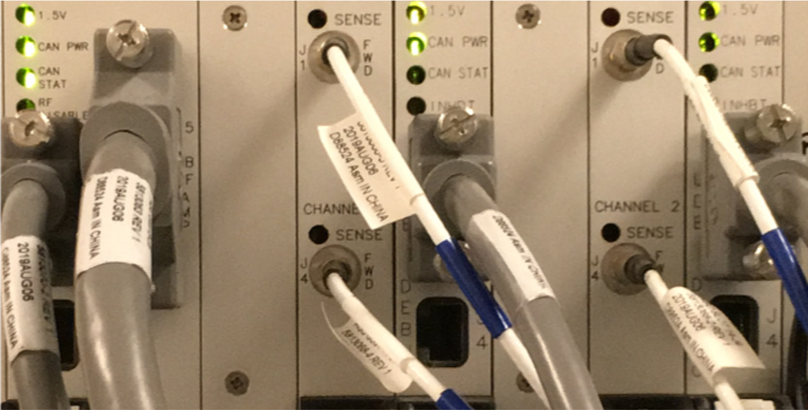

- 00000018WIA30482E20GYZ
- id_131071613.2
- Mar 11, 2021 3:56:13 AM
Universal Power Monitor (UPM) Troubleshooting
Diagnostics
UPM Diagnostics can be found on the Common Service Desktop.
Reference Documents/Vendor Manuals
-
FRU Manual
-
Block Diagrams
LED Descriptions
Input Panel
-
Connections to input power and CAN communication.
-
ON/OFF switch for entire ASC Chassis.
-
Reset Button will reset both UPMs; however, any measured RF power from the scanner is NOT reset.
-
Voltage banana jacks are for checks of the power supply.
Power Supply
The power supply provides 3.3V, 5.0V, +12V and –12V to the processor and detector boards.
Processor Board
The processor board for UPM1 and UPM2 are identical. These boards collect sample data from the detector boards, calculate the RF power, and inhibit the scan if the trip limits have been exceeded or if some other UPM error occurs
RF Detector Boards
For systems with MNS, there are four RF detector boards (two boards for each UPM). Systems that do not use MNS have only two RF detector boards. All RF detector boards are identical. These boards convert measured RF power into a digital signal that is sent to the processor boards. Each board has two channels and each channel has three RF input ports; see details in the table below.
The original detector board, part number 5250034, must always have the SMB 50 ohm terminators installed on the unused ports of J2, J3, J5, and J6.
| DETECTOR BOARD | NARROW BAND RF DETECTOR BOARD | BROAD BAND RF DETECTOR BOARD (OPTION) |
| Channel 1 FWD | Body Forward | CW Forward (not used) |
| Channel 1 REF 1 | Body Reflected (used only on 3.0T) | CW Reflected (not used) |
| Channel 1 REF 2 | Body Hybrid Reflected (not used) | CW Hybrid Reflected (not used) |
| Channel 2 FWD | Head Forward | MNS Forward |
| Channel 2 REF 1 | Head Reflected (used only on 3.0T) | MNS Reflected (used only on 3.0T) |
| Channel 2 REF 2 | Head Hybrid Reflected (not used) | MNS Hybrid Reflected (not used) |
RF Interface Boards
This board permits the host to control and monitor the operation of the RF SRFD2 or MKS amplifier. The board controls both the narrowband RF amp and the broadband (MNS) amp.
UPM1/UPM2
Every system contains two (redundant) UPMs. These UPMs are identical and boards can be swapped between the two for troubleshooting; see UPM Board Swap Procedure for details.
Body Hybrid Reflected ports (Port 3 on Channel 2 on narrowband RF detector boards) should be connected to the Body Hybrid Reflected connections; however, current implementation ignores signals coming from these inputs.
A 50 ohm terminator is required on any RF port on the RF detector boards that is not being used.

| LED NAME | DESCRIPTION |
| Sense | If ON, the RF detector board is detecting RF input signal into one of the 3 ports on that channel. If the Sense LED is OFF, then no signal is detected on that channel. |
| 1.5V | If ON, the processor board indicates it is receiving 1.5V, which comes from the power supply. |
| CAN Power | If ON, the 24V from the CAN power supply is detected. Note that this voltage is provided via the CAN communication cable connected to the UPM processor board. So, this LED should be ON even if the UPM is powered down. |
| CAN Status | If the CAN status blinks once, then the processor board is attempting to communicate with the MGD host. If the LED blinks twice, then the processor board is communicating with the MGD system. If LED remains OFF, then the processor board is not attempting communication with the host. |
| Inhibit | If this LED is ON, then the UPM has detected some sort of fault and has inhibited any scanning. The LED will remain ON until the fault is cleared. Check the error log for details on the fault. For excessive power faults, it will clear after the power level is less than 99% of the trip limit. |
UPM Calibration Troubleshooting
Theory
The UPM calibration runs a pcal scan and adjusts digital attenuators internal to the UPM to match the expected RF signal level.
The final UPM digital attenuator values are written to the UPM Calibration Configuration files (Upm1Cal.cfg, Upm2Cal.cfg) located in the w/config directory. There can be substantial variation in these calibration values from port to port, or on the same port following the replacement of any hardware.
Troubleshooting
If the UPM calibration fails, first check the system error log. Use the Problem/Solution Table in Problem/Solution Table to troubleshoot the errors in the error log. If Problem/Solution Table does not solve the calibration errors, attempt the following steps:
-
Quit UPM Calibration tool, end any open exams, and reset TPS.
-
Open a new exam with Patient ID: geservice and weight: 111 lbs.
-
Select Service, Other.
-
Select apb cal (series 1 if troubleshooting body and series 2 if troubleshooting head).
-
Select Save Series.
-
Verify that the correct hardware setup exists (cable connections and dummy load connections match setup in documentation).
-
Click Manual Pre-scan.
-
Set TG to 63 if troubleshooting UPM Reflected Power Calibration, or set TG to 200 if troubleshooting UPM Forward Power Calibration.
-
Click Scan TR.
-
Check for inhibit light on ASC/UPM Chassis, Driver Module.
-
Check for Sense LEDs flashing on the correct channel (both RF Detector boards should have one of the channel’s Sense LEDs flashing, matching the channel you are troubleshooting).
-
Exit Manual Prescan.
The system must be able to scan with the correct UPM Sense LEDs flashing before running the calibration. If the Sense LEDs are not flashing, check the error log to determine if the scan was stopped. Also verify that the hardware setup is correct.
If setup and system are okay but the Sense lights are not flashing, verify that RF is getting to the UPM by placing a 50 Ohm terminator in the port you are troubleshooting and the UPM RF cable into a 50 Ohm terminated scope. Verify that you see a RF signal; if no signal exists, attempt reading at various points along the cable path to determine where the signal is lost. If a signal exists, attempt swapping/replacing RF detector boards.
Many times, calibration may fail due to an RF Amp Fault for excessive peak power (Fault 95). Running the scan above at TG 180 for 6 minutes, then immediately running the calibration, can prevent this issue. If this fails, recheck the RF Amp calibration to make sure it is calibrated properly.
MNS only: If no power is output from the MNS amplifier during UPM Forward Power calibration, follow these steps:
-
Close the UPM Tool and start a new exam in geservice mode with a patient weight of 50kg.
-
Create a landmark with the 31P TR Switch.
-
Prescribe 31P Func Check series from the Service > MNS Setup menu.
-
Save and download the sequence with any acceptable scan parameters.
-
Open Spectro Prescan, select [Start], and let the sequence run for about 10 seconds.
-
Stop the sequence, end the exam, and continue with the UPM calibration.
UPM Functional Check Troubleshooting
The UPM Functional Check runs a prescribed scan in the selected RF chain. It compares the measured RF power from the UPM to the expected value in a config file. If the values do not match within 12%, the functional check will fail.
In addition, the functional check confirms that the UPM will stop scanning if the RF measured exceeds the trip limit
If the functional check fails to run, first check the system error log. Proceed to Problem/Solution Table for troubleshooting UPM system errors.
If the functional check fails due to inaccurate power measurement, recalibrate the UPM, then attempt the functional check again.
Problem/Solution Table
| FAULT DESCRIPTION | PROBLEM DESCRIPTION | GE FIELD ACTION |
|
EM_SCP_STOP_ACTION_UPM_ERROR Universal Power Monitor error occurred. |
General fault. |
This is a general UPM fault; view other errors in error log for more details. |
|
EM_POWER_FAULT_WARNING Power Monitor Warning: % percent of limit reached for the XX Average. |
General high power warning. |
This is a general warning that the scan approached the peak RF power limit. No action required. |
|
EM_LARGE_DIFFERENCE_DETECTED Large difference was detected between the two Power Monitors. Difference is in the (long/short term) average.
|
The power levels detected by the UPMs differ greatly.
|
If these steps do not fix the issue, replace the UPM processor board within the UPM chain that is experiencing faults. |
|
EM_TOO_MUCH_REFLECTED_POWER UPM1/2 detected more reflected power than forward power on the (Head/Body/MNS) Amplifier. Possible cause is swapped Forward and Reflected Power Cables. Forward Power = XX W Reflected Power = YY W Coil Reflected Power = ZZ W |
UPM detected that there was more reflected power than forward power. |
|
|
EM_UPM_FPGA_SN_FLT The (UPM1/2) has detected that the FPGA was unable to read serial number information. |
The FPGA was unable to read serial number information from (RF Detector/RF Processor) UPM board. This could be caused by an old revision of FPGA code or a hardware problem. |
|
|
EM_UPM_PWR_FLT_DETECT The (UPM1/2) has detected an Invalid Power Fault on the (Head/Body/MNS/CW) Amplifier. |
The UPM detected RF power out of an amplifier port that should not have been producing RF at that time. |
Capture the protocol/sequence that produces this error repeatedly, then follow these steps:
|
|
EM_UPM_PWR_LIMIT_EXCEED The (UPM1/2) detected a Power Fault on the (Short/Long Term) Average. Calculated Average =XX Limit =XX |
The UPM detected power that exceeded the trip limit for the area scanned. |
|
|
EM_RF_NB_BOARD_MISSING NB Detector Board Missing |
UPM detected that a NB RF Detector board is missing. |
|
|
EM_RF_BB_BOARD_MISSING MNS Detector Board Missing |
UPM detected that a MNS RF detector board is missing. |
|
|
EM_BUS_SELFTEST_FAIL The UPM1/2 failed its BUS Self Test on the XXChannel Expected Data : X% Detected Data : Y% |
This is a failure of the data bus from the RF detector board, through the ASC backplane to the processor board. |
|
|
EM_DAC_SELFTEST_FAIL The (UPM1/2) failed its DAC Self Test on the XX Channel. Expected Data : X Detected Data : Y |
This is a failure of the digital to analog converter on the RF detector board. |
|
|
EM_LUT_SELFTEST_FAIL The (UPM1/2) failed its LUT Self Test on the XX Channel. Expected Data : 0x%x. Detected Data : 0x%x. |
LUT = Look Up Table. This is a failure of the processor board. |
|
|
EM_NB_LUT_TABLE_LOAD_FAIL The UPM1/2 Look Up Table Failed on the Narrow Band RF Detector board Number of Write Failures: ## |
LUT = Look Up Table. This is a failure of the processor board. |
|
|
EM_MNS_LUT_TABLE_LOAD_FAIL The UPM1/2 Look Up Table Failed on the MNS RF Detector board. Number of Write Failures: ## |
LUT = Look Up Table. This is a failure of the processor board. |
|
|
EM_SCP_UPM_SHORT_TERM_REG_FAIL (Head/Body/Extremity/Other) Short Term Limit Write Fail. Head Present Limit: XX Body Present Limit: XX Extremity Present Limit: XX Other Present Limit: XX |
A value written to the register was read back as a different value. |
Do not change any hardware, because this could normally appear during resets or when software is out of sync with the UPM. If the failure continues, replace the processor board. |
|
EM_SCP_UPM_LONG_TERM_REG_FAIL (Head/Body/Extremity/Other) Long Term Limit Write Fail. Head Present Limit: XX Body Present Limit: XX Extremity Present Limit: XX Other Present Limit: XX |
A value written to the register was read back as a different value. |
Do not change any hardware, because this could normally appear during resets or when software is out of sync with the UPM. If the failure continues, replace the processor board. |
|
EM_UPM_CALIBRATION_FAIL The (UPM1/2) detected a Calibration failure on the ADC. Calibration Pass BitMap = XX |
The Analog to Digital converter on the RF Detector board failed to autocal properly. |
|
|
EM_UPM_CAN_SELFTEST The (UPM1/2) failed its CAN selftest. The CAN module on the DSP failed its self test procedure. |
The fault indicates a failure in the CAN DSP, which is located on the UPM processor board. |
|
|
EM_UPM_FPGA The (UPM1/2) Has Detected a FPGA error. Source of Fault is (one of the following): FPGA Read/Write failure FPGA INIT not ready |
The fault indicates a failure in the FPGA which is located on the UPM processor board. |
|
|
EM_UPM_NOT_CALIBRATED The UPM1/2 has not been Calibrated. No Scanning will be Allowed until Calibrated. |
This fault occurs when the UPM has not been calibrated. |
Calibrate the UPM and perform the UPM functional check. |
|
EM_UPM_PS_FAULT The (UPM1/2) Has Detected a Power Supply Fault. Source of Fault is (one of the following):
The UPM detected a problem with one of its power supplies. Note:
The fault indicates RF, then proceed to next row in this table. |
This fault occurs when the UPM processor board detects incorrect power from the power supply. This is due to a failed power supply, backplane, processor board, or a processor board or power supply that is not seated correctly in its slot. |
|
|
EM_UPM_PS_FAULT The (UPM1/2) Has Detected a Power Supply Fault. Source of Fault is (one of the following):
The UPM detected a problem with power on a RF Detector board. |
The issue is either with a supply voltage on one of the detector boards or with the monitoring of that supply voltage on the associated UPM processor board. |
|
|
EM_UPM_FILE_OPEN_FAIL Unable to open the YY file. Please fix and TPS Reset. |
Caused due to missing software config file. |
Error should state the file name and location. Try Restore Info; otherwise, a software load may be required. |
|
EM_UPM_CAL_FAIL_EMULATED Unable to Calibrate the UPM because it is emulated out. Please remove emulation and TPS Reset. |
UPM is emulated out. |
Remove UPM emulation from mgd_stage file. Reset TPS and recalibrate. |
|
EM_UPM_CAL_FAIL_FILE_OPEN UPM Calibration failed due to failure to open XX file. |
Caused due to missing software config file. |
Error should state the file name and location. Try Restore Info; otherwise, a software load may be required. |
|
EM_UPM_CAL_FAIL_POWER UPM Calibration failed due to failure to converge on a calibration point. Verify that power is applied on the proper channel on the UPM. |
UPM calibration failure. The UPM attempted to calibrate to applied power; however, could not match value required. |
Go to UPM Calibration Troubleshooting, UPM calibration troubleshooting |
|
EM_UPM_CAL_TIMEOUT UPM Calibration failed due to a timeout on the Calibration process. Verify that the UPM is powered up and all cables are connected properly. |
UPM calibration failure. The UPM attempted to calibrate to applied power; however, could not match value required. |
Go to UPM Calibration Troubleshooting, UPM calibration troubleshooting. |
UPM Board Swap Procedure
If either the processor board or RF detector boards are swapped, run the UPM calibration and functional check before patient scanning.